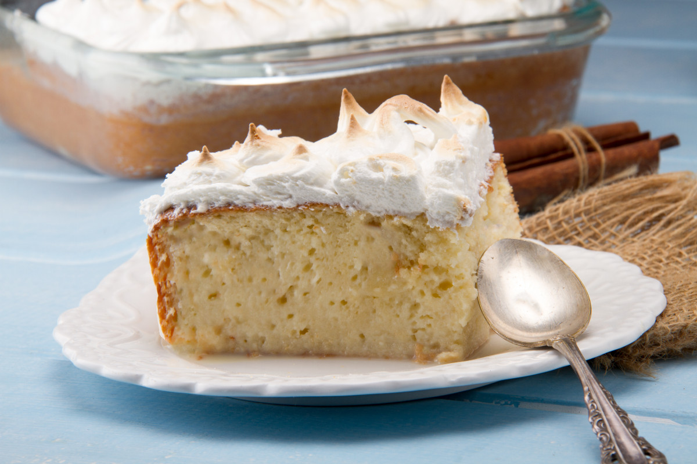

Desserts & Drinks

Tres Leches
A delicious sponge cake soaked in three types of milk, topped with whipped cream.

Pisco Sour
Peru's national cocktail made with Pisco, lemon juice, egg white, and bitters.

Chicha Morada
A refreshing purple corn drink, often flavored with fruit and spices.

Alfajores
Sweet cookies filled with dulce de leche, often dusted with powdered sugar.